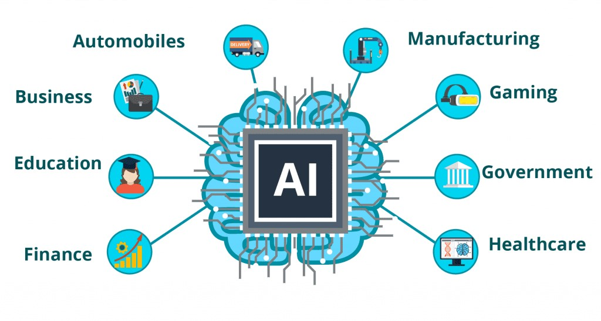
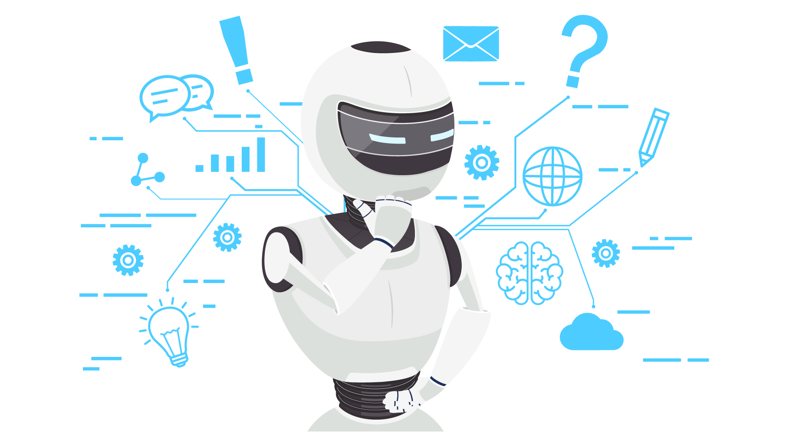

Les applications de l'intelligence artificielle
L'intelligence artificielle (IA) a été utilisée dans des applications visant à résoudre des problèmes spécifiques dans l'industrie et le monde universitaire. L'IA, comme l'électricité ou les ordinateurs, est une technologie à usage général qui a une multitude d'applications. Elle a amélioré la traduction des langues, la reconnaissance des images, l'évaluation des crédits, le commerce électronique et de nombreux autres domaines.
Marketing
Le marketing est un moyen d'enrober vos produits de sucre pour attirer plus de clients. Nous, les humains, sommes plutôt doués pour l'enrobage, mais que se passerait-il si un algorithme ou un robot était là uniquement dans le but de commercialiser une marque ou une entreprise ? Il ferait un travail assez impressionnant !
Au début des années 2000, si nous recherchons un produit dans un magasin en ligne sans en connaître le nom exact, trouver le produit devenait un véritable cauchemar. Mais aujourd'hui, lorsque nous recherchons un article sur n'importe quelle boutique en ligne, nous obtenons tous les résultats possibles liés à cet article. C'est comme si ces moteurs de recherche lisaient dans nos pensées ! En quelques secondes, nous obtenons une liste de tous les articles pertinents. Un exemple de ceci est de trouver les bons films sur Netflix.
Une des raisons pour lesquelles nous sommes tous obsédés par Netflix and chill est que Netflix fournit une technologie prédictive très précise basée sur les réactions des clients aux films. Elle examine des millions d'enregistrements pour suggérer des émissions et des films que vous pourriez aimer en fonction de vos actions et choix de films précédents. Au fur et à mesure que l'ensemble des données augmente, cette technologie devient de plus en plus intelligente.
Avec les progrès croissants de l'IA, dans un avenir proche, il pourrait être possible pour les consommateurs sur le web d'acheter des produits en prenant une photo de ceux-ci. Des entreprises comme CamFind et leurs concurrents l'expérimentent déjà.
Banque
L'IA dans le secteur bancaire se développe plus vite que vous ne le pensiez ! De nombreuses banques ont déjà adopté des systèmes basés sur l'IA pour fournir un support client, détecter les anomalies et les fraudes à la carte de crédit. La HDFC Bank en est un exemple.
HDFC Bank a développé un chatbot basé sur l'IA appelé EVA (Electronic Virtual Assistant), construitpar Senseforth AI Research, basé à Bengaluru.
Depuis son lancement, Eva a répondu à plus de 3 millions de questions de clients, a interagi avecplus d'un demi-million d'utilisateurs uniques et a tenu plus d'un million de conversations. Eva peutrassembler des connaissances provenant de milliers de sources et fournir des réponses simples enmoins de 0,4 seconde.
L'utilisation de l'IA pour la prévention de la fraude n'est pas un concept nouveau. En fait, les solutions d'IA sont là pour renforcer la sécurité dans un certain nombre de secteurs d'activité, notamment le commerce de détail et la finance.
En traçant l'utilisation des cartes et l'accès aux terminaux, les spécialistes de la sécurité préviennent plus efficacement la fraude. Les organisations comptent sur l'IA pour retracer ces étapes en analysant les comportements des transactions.
Des entreprises telles que MasterCard et RBS WorldPay s'appuient depuis des années sur l'IA et le Deep Learning pour détecter les schémas de transactions frauduleuses et prévenir la fraude à la carte. Cela a permis d'économiser des millions de dollars.
Finance
Les entreprises se sont appuyées sur les ordinateurs et les scientifiques des données pour déterminer les futurs modèles sur le marché. Le trading dépend principalement de la capacité à prédire l'avenir avec précision.
Les machines sont très efficaces dans ce domaine, car elles peuvent traiter une grande quantité de données en peu de temps. Les machines peuvent également apprendre à observer des modèles dans les données passées et prédire comment ces modèles pourraient se répéter à l'avenir.
À l'ère des transactions à très haute fréquence, les organismes financiers se tournent vers l'IApour améliorer leurs performances boursières et accroître leurs bénéfices.
L'une de ces organisations est la principale maison de courtage du Japon, Nomura Securities. Cette société a poursuivi, à contrecœur, un seul objectif : analyser les idées de traders expérimentés à l'aide d'ordinateurs. Après des années de recherche, Nomura est sur le point d'introduire un nouveau système de négociation des actions.
Ce nouveau système stocke dans son ordinateur une grande quantité de données sur les prix et les transactions. En puisant dans ce réservoir d'informations, il effectuera des évaluations. Par exemple, il pourra déterminer que les conditions actuelles du marché sont similaires à celles d'il y a deux semaines et prédire l'évolution du cours des actions dans quelques minutes. Cela permettra de prendre de meilleures décisions commerciales sur la base des prévisions des prix du marché.
Agriculture
Voici un fait alarmant : le monde devra produire 50 % de nourriture en plus d'ici 2050, car nous mangeons littéralement tout ! La seule façon d'y parvenir est d'utiliser nos ressources avec plus de prudence. Cela étant dit, l'IA peut aider les agriculteurs à mieux exploiter la terre tout en utilisant les ressources de manière plus durable.
- Des problèmes tels que le changement climatique, la croissance démographique et la sécurité alimentaire ont poussé le secteur à rechercher des approches plus innovantes pour améliorer le rendement des cultures.
- Les organisations utilisent l'automatisation et la robotique pour aider les agriculteurs à trouver des moyens plus efficaces de protéger leurs cultures contre les mauvaises herbes.
Blue River Technology a mis au point un robot appelé See & Spray qui utilise des technologies de vision par ordinateur, comme la détection d'objets, pour surveiller et pulvériser avec précision un désherbant sur les plants de coton. La pulvérisation de précision peut aider à prévenir la résistance aux herbicides.
Par ailleurs, la start-up berlinoise PEAT, spécialisée dans les technologies agricoles, a mis au point une application appelée Plantix qui identifie les défauts potentiels et les carences en nutriments dans le sol par le biais d'images.
L'application de reconnaissance d'image identifie les défauts potentiels grâce aux images capturées par l'appareil photo du smartphone de l'utilisateur. Les utilisateurs reçoivent ensuite des techniques de restauration du sol, des conseils et d'autres solutions possibles. L'entreprise affirme que son logiciel peut réaliser une détection des formes avec une précision estimée à 95 %.
Soins et santé
Lorsqu'il s'agit de sauver nos vies, de nombreuses organisations et centres de soins médicaux s'appuient sur l'IA. Il existe de nombreux exemples de la façon dont l'IA dans les soins de santé a aidé les patients du monde entier.
Une organisation appelée Cambio Health Care a mis au point un système d'aide à la décision cliniquepour la prévention des accidents vasculaires cérébraux, qui peut avertir le médecin lorsqu'unpatient risque d'avoir une attaque cardiaque.
Un autre exemple est celui de Coala life, une entreprise qui possède un appareil numérisé capable de détecter les maladies cardiaques.
De même, Aifloo développe un système permettant de suivre l'évolution des personnes dans les maisonsde retraite, les soins à domicile, etc. L'avantage de l'IA dans les soins de santé est qu'il n'estmême pas nécessaire de développer un nouveau médicament. Il suffit d'utiliser un médicament existantde la bonne manière pour sauver des vies.
Jeux video
Au cours des dernières années, l'intelligence artificielle est devenue une partie intégrante de l'industrie du jeu. En fait, l'une des plus grandes réussites de l'IA est dans l'industrie du jeu.
Le logiciel AlphaGo de DeepMind, basé sur l'IA et célèbre pour avoir battu Lee Sedol, le champion du monde du jeu de GO, est l'une des réalisations les plus importantes dans le domaine de l'IA.
Peu après cette victoire, DeepMind a créé une version avancée d'AlphaGo, appelée AlphaGo Zero, qui abattu son prédécesseur dans un face-à-face IA-IA. Contrairement à l'AlphaGo original, que DeepMind aentraîné au fil du temps en utilisant une grande quantité de données et de supervision, le systèmeavancé, AlphaGo Zero a appris tout seul à maîtriser le jeu.
Parmi les autres exemples d'intelligence artificielle dans les jeux, citons le First Encounter Assault Recon, plus connu sous le nom de F.E.A.R., un jeu vidéo de tir à la première personne.

Mais qu'est-ce qui rend ce jeu si spécial ? Les actions entreprises par l'IA adverse sont imprévisibles car le jeu est conçu de telle manièrque les adversaires sont entraînés tout au long de la partie et ne répètent jamais les mêmeerreurs. Ils s'améliorent au fur et à mesure que le jeu devient plus difficile. Cela rend le jetrès difficile et incite les joueurs à changer constamment de stratégie et à ne jamais rester danla même position
Les expéditions et les découvertes spatiales nécessitent toujours l'analyse de grandes quantitéde données. L'intelligence artificielle et l'apprentissage automatique sont les meilleurs moyens dgérer et de traiter des données à cette échelle. Après des recherches rigoureuses, les astronomeont utilisé l'intelligence artificielle pour passer au crible des années de données obtenues par ltélescope Kepler afin d'identifier un système solaire lointain composé de huit planètes.
L'intelligence artificielle est également utilisée pour la prochaine mission du rover de la NASA vers Mars, le Mars 2020 Rover. L'AEGIS, qui est un rover martien basé sur l'IA, se trouve déjà sur la planète rouge. Le rover est responsable du ciblage autonome des caméras afin d'effectuer des investigations sur Mars.
Véhicules autonomes
Depuis longtemps, les voitures autonomes sont un sujet à la mode dans le secteur de l'intelligence artificielle. Le développement des véhicules autonomes va définitivement révolutionner le système de transport.
Des entreprises comme Waymo ont effectué plusieurs tests de conduite à Phoenix avant de déployer leur premier service public de covoiturage basé sur l'IA. Le système d'IA collecte les données provenant du radar, des caméras, du GPS et des services cloud des véhicules pour produire des signaux de commande qui font fonctionner le véhicule.
Les algorithmes avancés de Deep Learning peuvent prédire avec précision ce que les objets à proximité du véhicule sont susceptibles de faire. Les voitures Waymo sont ainsi plus efficaces et plus sûres.
Un autre exemple célèbre de véhicule autonome est la voiture à conduite autonome de Tesla. L'intelligence artificielle met en œuvre la vision par ordinateur, la détection d'images et l'apprentissage profond pour construire des voitures capables de détecter automatiquement des objets et de se déplacer sans intervention humaine.
Elon Musk parle beaucoup de la façon dont l'IA est mise en œuvre dans les voitures autonomes et les fonctions de pilotage automatique de Tesla. Il a cité que,
"Tesla aura des voitures entièrement autonomes d'ici la fin de l'année et une version "robotaxi" - qui peut transporter des passagers sans personne au volant - prête pour les rues l'année prochaine".
Réseaux sociaux
Comment l'IA est-elle utilisée dans les réseaux sociaux ?
L'IA est un élément clé des réseaux sociaux populaires que vous utilisez tous les jours.
- Facebook utilise l'apprentissage automatique avancé pour tout faire : vous servir du contenu, reconnaître votre visage sur les photos et cibler les utilisateurs avec de la publicité. Instagram (propriété de Facebook) utilise l'IA pour identifier les visuels.
- LinkedIn utilise l'IA pour offrir des recommandations d'emploi, suggérer des personnes avec lesquelles vous aimeriez entrer en contact, et vous servir des messages spécifiques dans votre flux.
- Snapchat exploite la puissance de la vision par ordinateur, une technologie d'IA, pour suivre vos traits et superposer des filtres qui bougent avec votre visage en temps réel.
Ce ne sont là que quelques exemples de la manière dont l'IA travaille en coulisses pour alimenter les fonctionnalités des réseaux sociaux les plus populaires au monde.
Et, sur toutes les plateformes de médias sociaux et pour chaque message publié sur les médias sociaux, un algorithme d'IA ou un système d'apprentissage automatique régit la manière dont le contenu que vous créez et les publicités que vous achetez sont placés devant les utilisateurs - souvent d'une manière qui n'est pas entièrement transparente pour les spécialistes du marketing.
Tout cela pour dire que l'IA est un élément fondamental du fonctionnement des réseaux sociaux d'aujourd'hui.
Mais l'IA opère souvent dans les coulisses des plateformes populaires, et entièrement à la discrétion de l'entreprise propriétaire de la plateforme.
Cela ne signifie pas pour autant que les spécialistes du marketing ne peuvent pas exploiter l'IA dans le cadre de leur stratégie de médias sociaux.
En fait, il existe de nombreux outils de marketing et de surveillance des médias sociaux basés sur l'intelligence artificielle, disponibles dans le commerce, pour un certain nombre de cas d'utilisation.